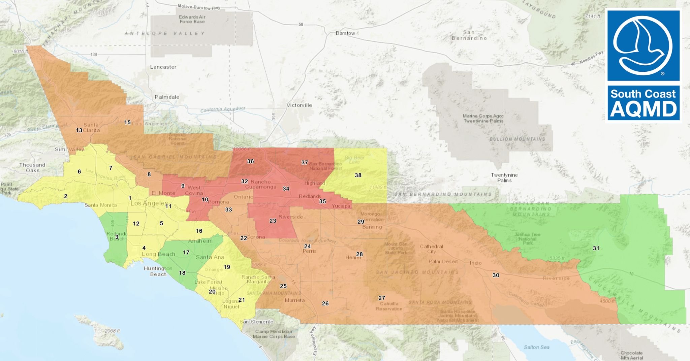
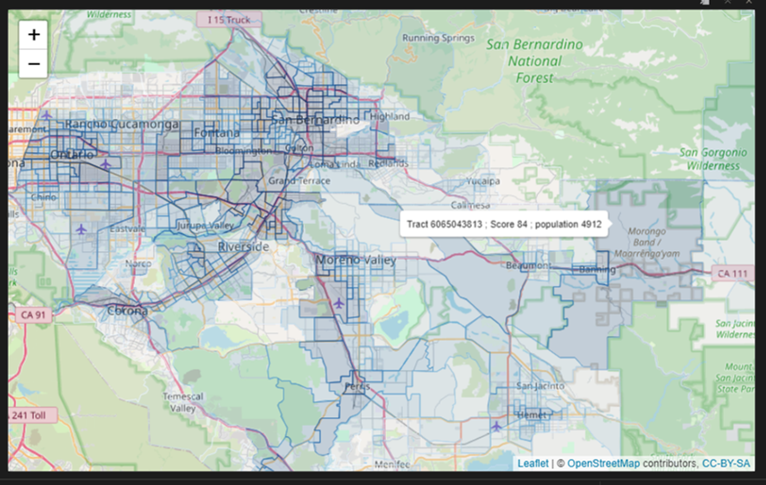
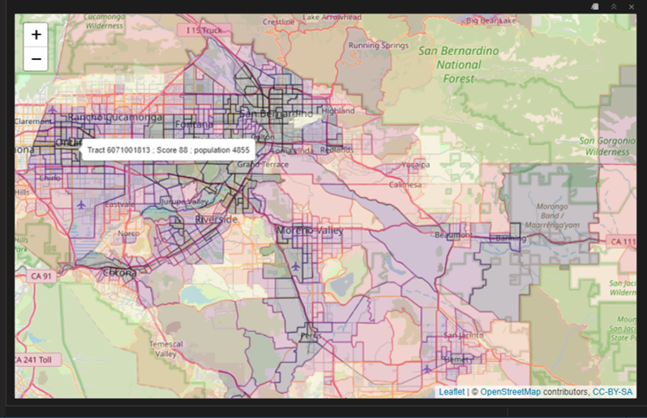

1 Fundamentals of Data Visualization
Today we will be focusing on the theory of data visualization.
1.1 Data, Information, and Knowledge
1.1.1 What is data?
- Facts, or discrete elements of information.
- quantitative or qualitative observations or descriptions
- statistics or values represented in a form suitable for processing by computer
- plural of datum (never ever use this, IMO, everything is data, singular or plural)
1.1.2 What is information?
- The act of informing or the condition of being informed; communication of knowledge
- Processed, stored, or transmitted data; structured data; data in context and significance
- Stimuli that has meaning in some context for its receiver
1.1.3 What is knowledge?
- General understanding or familiarity with a subject
- Awareness of a subject; the state of being informed
- Intellectual understanding; the state of appreciating the truth of information
1.2 Weather map example
The visualization structures the underlying data into information. A good visualization communicates complex ideas with clarity, precision, and efficiency. It imparts knowledge.
1.2.1 Categories of information illustrated by the newspaper weather visualization
-
Quantitative (i.e., numerical) data
- Temperatures (high, low)
- Precipitation
- Wind speeds and directions
- Air quality index
- UV index
- Tide heights and times
- Sunrise & sunset times
-
Qualitative observations
- ‘Seasonably warm’
- ‘Fog, then mostly sunny’
- Sky categories (partly cloudy, thunderstorms, rain, sunny, showers, fog, snow, ice)
- Air quality categories (e.g., unhealthy, moderate)
- Flood potential
- Warm front/cold front
- Low/high pressure
- dangerous rip currents risk is moderate/low
-
Spatial
- geographic properties
- topology
- geometric
- distance
- projections
1.2.2 Data encodings
- Geometric primitives such as points, lines, and areas
- Visual channels such as size, color, shape, position, angle, and texture
Examples of these encodings are shown in Figure 1.2.
Why am I calling this information, and not data or insight?
Why isn’t this course called Environmental Information Visualization?
1.3 Abstraction
When we talk about the weather and use a data visualization, we are abstracting from Figure 1.3 to a 2-D representation of some numbers, colors, or pictures on a pixelized screen.
🌩️🌩️🌩️🌩️🌩️🌩️🌩️🌩️🌩️🌩️🌩️🌩️🌩️🌩️🌩️🌩️🌩️🌩️🌩️🌩️🌩️🌩️🌩️
Data visualization is an artistic abstraction.
Any environmental data visualization is not the thing itself. We are abstracting the thing itself in order to represent it in a condensed and structured way that conveys information. A thunderstorm emoji conveys the information about the weather in an abstract way, but is not the weather. However, we can put that thunderstorm emoji
- on a map to provide spatial information
- on a clock to provide temporal information
- on a phone or an electronic device to communicate the weather in shorthand
Similarly, the abstraction of data into information allows for substantial control over the stylistic choices. Just like art has impressionism, realism, and surrealism, there are many different schools of thought about the appropriate ways to convey information.
In other words, the colors, symbols, shapes, and other stylistic choices encode and reveal truths about the data.
1.4 Ethics
Avoid misrepresention!
Visualization methods can, purposefully or inadvertently, distort the underlying data’s meaning. There are many underlying causes that can cause this distortion. Distortion can be caused (un)intentionly by the designer of the visualization. The other side is that the visualization may not be understandable to the user. Broadly, these problems can be categorized as:
1.4.1 Spatial projection
2-Dimensional cartographic representations (i.e., maps) distort either
{kind=link}
{kind=link}
a.gif){kind=link}
1.4.2 Cognitive
Problems associated with -
- graphical elements - “Roses are red, violets are blue.”
- over-simplification - compare ozone alert images from KTLA news and the SCAQMD.


- under-simplification
- heterogeneity of intended audience (e.g., language barriers, color palettes for color-blindness).
1.4.3 Emotional
Graphical design or content may be repellent or triggering. In the syllabus, the COVID sneeze imagery is both factual model data and an intentionally gross way of visualizing the data to generate a feeling of disgust.

1.5 What is the Baseline?
One of the most common distortions is changing the scale of the axis to distort magnitudes. Here’s an example.
The code below loads some R packages that are useful for data processing and visualization.
This code imports monthly mean Mauna Loa CO2 data from NOAA GMD CMDL, renames the columns, and then displays the bottom five rows to make sure it shows what we think it should.
co2 <- read_table('https://www.gml.noaa.gov/webdata/ccgg/trends/co2/co2_mm_mlo.txt',
skip = 57 ) #%>%
fieldNames <- c('year', 'month', 'decDate', 'meanCO2', 'trendedCO2', 'days', 'stdev', 'unc')
colnames(co2) <- fieldNames
tail(co2)# A tibble: 6 × 8
year month decDate meanCO2 trendedCO2 days stdev unc
<dbl> <dbl> <dbl> <dbl> <dbl> <dbl> <dbl> <dbl>
1 2024 2 2024. 425. 424. 22 1.24 0.51
2 2024 3 2024. 425. 424. 22 0.99 0.4
3 2024 4 2024. 427. 424. 24 0.98 0.38
4 2024 5 2024. 427. 424. 29 0.76 0.27
5 2024 6 2024. 427. 424. 20 0.65 0.28
6 2024 7 2025. 426. 425. 24 0.69 0.27head(co2)# A tibble: 6 × 8
year month decDate meanCO2 trendedCO2 days stdev unc
<dbl> <dbl> <dbl> <dbl> <dbl> <dbl> <dbl> <dbl>
1 1959 7 1960. 317. 316. -1 -9.99 -0.99
2 1959 8 1960. 315. 316. -1 -9.99 -0.99
3 1959 9 1960. 314. 317. -1 -9.99 -0.99
4 1959 10 1960. 313. 316. -1 -9.99 -0.99
5 1959 11 1960. 315. 317. -1 -9.99 -0.99
6 1959 12 1960. 316. 316. -1 -9.99 -0.99The CO2 data is displayed in #fig-KeelingCurve1 and #fig-KeelingCurve2. How does the y-axis scale affect the interpretation of the same dataset?
plot1 <- co2 %>%
ggplot(aes(x = decDate, y = meanCO2)) +
geom_line() +
theme_bw() +
labs(x = 'Year', y = 'Concentration CO2 (ppm)')
ggplotly(plot1)plot2 <- plot1 +
scale_y_continuous(limits = c(0,425))
ggplotly(plot2)A longer viewpoint is shown in Figure 1.7 going back well beyond the late 1950s using CO2 data from ice cores, sediments, and other paleo-climatological sources. It shows another y-axis scale.
How do the three different y-axis scales distort the user impression of the data?
1.6 Color
Color is fraught with peril and cultural associations. Moreover, roughly 10% of the population has some form of color-blindness.
Color is very commonly used to manipulate the audience in environmental data visualization.
- Be cognizant of how choosing a color palette manipulates the audience
- Don’t use too many colors (rule of seven)
- Be aware of the three types of color palettes and choose the right one as in Figure 1.8.
- continuous sequential
- categorical
- continuous diverging

How does CalEnviroScreen look when changing from a Blues colorPalette to viridis magma?


Looking for more on color palettes? Check out this Data Visualization Society post, or this color harmony blog post for marketing design.
1.7 Salience
Visual salience is the distinctive perceptual measure of how much a visual stimuli stands out from its surrounding neighbors to grab an observer’s attention.
Focus on the pictures and captions to get an impression of visual salience. We’ll be using this as reading as a topic for discussion.
1.4.4 Social
Cross-cultural norms -
Understanding the intended audience and their norms is always key to open and empathetic communication, whether through words or visualizations. Multiple visualizations may be required for communication with a diverse (i.e., heterogeneous) audience.